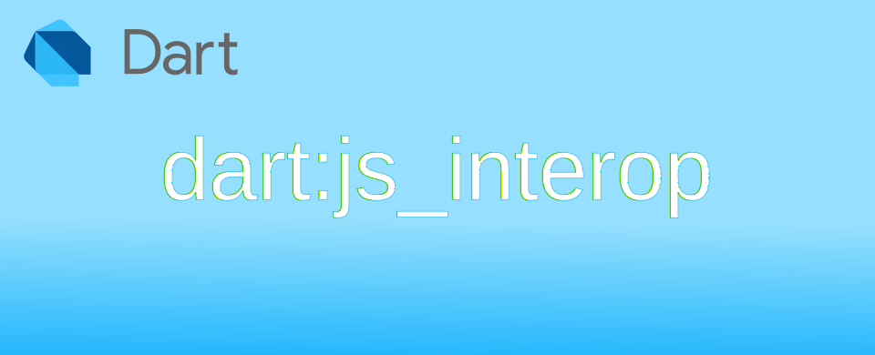

Dart: การใช้งาน dart:js_interop เบื้องต้น

js_interop ย่อมาจาก JavaScript Interoperability หรือ ความสามารถในการทำงานร่วมกันกับ JavaScript ไม่ว่าจะเป็น web app หรือ flutter ที่ทำงานบนเบราเซอร์ หากต้องการทำได้อย่างราบรื่น หากใช้งาน Dart 3.3 ขึ้นไปจะแนะนำให้ใช้ dart:js_interop แทน
การอ้างอิงตัวแปรและฟังก์ชั่งระหว่าง Dart และ JavaScript ด้วยคำสั่ง external
การอ้างถึงตัวแปรและฟังก์ชั่นจาก JavaScript สามารถใช้คำสั่ง external โดยจะสามารถ import และ export ตัวแปร class function เพื่อให้สามารถทำงานร่วมกันระหว่าง Dart และ JavaScript ได้
การ import ตัวแปรจาก JavaScript ด้วย get
การอ้างถึงสิ่งที่อยู่ใน JavaScript บนเบราเซอร์ สามารถใช้ get เพื่ออ้างอิงได้ ตัวอย่าง การนำเข้าตัวแปร testGlobalString
- ในไฟล์ my_js.js มีประโยค
globalThis.testGlobalString = "Hello world";
- ในไฟล์ index.html มีการเรียกใช้ไฟล์ JavaScript
<script src="my_js.js"></script>
<script defer src="main.dart.js"></script>
- ในไฟล์ main.dart จะมีการนำเข้าตัวแปร และพิมพ์ออก Console ของเบราเซอร์
import 'dart:js_interop';
@JS()
external String get testGlobalString;
void main() {
print(testGlobalString); // Console output → Hello world
}
การ export ตัวแปรจาก Dart ไปยัง JavaScript ด้วย set
- ในไฟล์ index.html จะมีปุ่มดังนี้
<button onclick="alert(globalThis.outputString)">outputString from dart</button>
- ในไฟล์ main.dart จะมีคำสั่ง set
outputStringไปยัง JavaScript
import 'dart:js_interop';
@JS()
external set outputString(String value);
void main() {
outputString = "text from dart";
}
เมื่อคลิกที่ปุ่ม จะแสดงกล่องข้อความตามที่กำหนดไว้ในไฟล์ main.dart
ลองติดต่อกับ JavaScript ผ่าน Object และ function
เนื่องจากสิ่งที่ต้องการจากการส่วนใหญ่ที่ใช้งานกับ JavaScript ก็คือ การเขียน Dart เพื่อใช้งาน JavaScript library ที่มีอยู่แล้ว สมมติว่ามี variable object function ถ้าจะใช้ Dart เพื่ออ้างอิงและเรียกใช้ ทำอย่างไรได้บ้าง
// String variable
globalThis.testGlobalString = "Hello world";
// myObject object
globalThis.myObject = {
member1: 100,
method1: function() {
console.log('this is method1');
},
method2: () => {
console.log('this is method2');
},
callMe() {
return 'this is myClass.callMe()';
}
};
// myFunction1()
globalThis.myFunction1 = function (number1) {
return number1 * 100;
}
// myFunction2()
globalThis.myFunction2 = (number2) => number2 * 100
ใน main.dart จะทำการสร้าง <div> ขึ้นมา แล้วลองเรียกคำสั่ง JavaScript แล้วเอาผลมาแสดง
import 'dart:js_interop';
import 'package:web/web.dart' as web;
// globalThis.testGlobalString set and get
@JS()
external set outputString(String value);
@JS()
external String get outputString;
// declare class <MyObject> for globalThis.myObject
extension type MyObject(JSObject _) implements JSObject {
external int get member1;
external set member1(int value);
external void method1();
external void method2();
external String callMe();
}
// get globalThis.myObject with type <MyObject>
@JS()
external MyObject get myObject;
// javascript function
@JS()
external int myFunction1(int number1);
@JS()
external int myFunction2(int number2);
void main() async {
// create <div> to output result
web.Element div = web.document.createElement('div');
web.document.body!.appendChild(div);
StringBuffer result = StringBuffer();
// play with myObject
result.writeln('myObject.member1 → ${myObject.member1}<br>');
myObject.member1 = 200;
result.writeln('myObject.member1 → ${myObject.member1}<br>');
// see result at Console
myObject
..method1()
..method2();
result.writeln('myObject.callMe() → ${myObject.callMe()}<br>');
// call function
result.writeln('myFunction1(1) → ${myFunction1(1)}<br>');
result.writeln('myFunction2(1) → ${myFunction2(1)}<br>');
// output result
div.innerHTML = result.toString();
}
ผลการเรียก JavaScript ผ่าน Dart
การแปลงประเภทข้อมูลระหว่าง Dart และ JavaScript
เนื่องจากประเภทข้อมูลที่ใช้ใน Dart และ JavaScript มีทั้งเหมือนและแตกต่างกัน ในการทำงานร่วมกัน จำเป็นต้องมีการแปลงประเภทข้อมูลเพื่อให้สามารถทำงานได้ถูกต้อง ตัวอย่าง testJSArray() รับข้อมูลเป็น Array หากส่งข้อมูลจาก Dart ไป จำเป็นต้องแปลงข้อมูล
globalThis.testJSArray = (inputArray) => {
if(Array.isArray(inputArray)) {
console.log('your size of Array is ' + inputArray.length);
}
else {
throw new Error('accecpt only Array');
}
};
import 'dart:js_interop';
// javascript function
@JS()
external void testJSArray(JSArray inputArray);
void main() async {
// convert list to JSArray
List listFromDart = [1, 2, 3, 4];
testJSArray(listFromDart as JSArray<JSAny?>); // console output → your size of Array is 4
// create JSArray in Dart
JSArray myJSArray = ['x', 'y'] as JSArray<JSAny>;
testJSArray(myJSArray); // console output → your size of Array is 2
}
ในกรณีที่ประกาศประเภทข้อมูลใน external แบบไม่ระบุว่าเป็น JSArray หากส่งข้อมูลไปยัง testJSArray() ตัว Dart จะไม่สามารถดักความผิดพลาดที่จะเกิดขึ้นได้ ทำให้ตัว testJSArray() ทำการ throw error ออกมา
import 'dart:js_interop';
// javascript function
@JS()
external void testJSArray(JSAny? _); // change from JSArray to JSAny? to ignore Dart type checking
void main() async {
// convert list to JSArray
List listFromDart = [1, 2, 3, 4];
testJSArray(listFromDart as JSArray<JSAny?>); // console output → your size of Array is 4
// try send JSString to function
testJSArray('hello'.toJS); // exception error
}

เกิด error จากการ throw error เพราะไม่ส่ง Array ให้
การ cast การตรวจสอบประเภทข้อมูล JavaScript ใน Dart
การตรวจสอบประเภทข้อมูลของ JavaScript
- คำสั่ง
.typeofEquals()ใช้สำหรับตรวจสอบประเภทของข้อมูลของ JavaScript ที่เขียนใน Dart - คำสั่ง
.isA<J>()ใน Dart 3.4 ขึ้นไป สามารถใช้รูปแบบนี้ตรวจสอบประเภทของข้อมูลได้ และง่ายกว่า
ตัวอย่าง ถ้าฟังก์ชั่นใน JavaScript สามารถคืนค่าข้อมูลกลับมาได้หลายประเภทรวมถึง null ใน Dart คือ JSAny?
globalThis.returnAny = function (returnType) {
if (typeof (returnType) == 'number') {
switch (returnType) {
case 1: return true; // return bool
case 2: return "I'm String"; // return String
case 3: return { me: 'Object memeber' }; // return Object
case 4: return [1, 2, 3]; // return Array
default: return returnType;
}
}
else {
return null;
}
};
ในการตรวจสอบค่าที่ได้มาจาก JavaScript ใน Dart
import 'dart:js_interop';
// javascript function declare to accecpt null value
@JS()
external JSAny? returnAny(JSAny? returnType);
void main() {
JSAny? result;
dynamic dartType;
List typeString = ['number', 'boolean', 'string', 'object', 'function'];
List params = <dynamic>[0, 1, 2, 3, 4, 5, 'x'];
print('test send paramenter → return as JS → convert to Dart');
for (int i = 0; i < params.length; i++) {
result = returnAny(params.elementAt(i));
dartType = result.dartify();
print('returnAny(${params.elementAt(i)}) → $result → $dartType');
for (var type in typeString) {
// print type of JavaScript and Dart runtime type
if (result.typeofEquals(type)) print('typeof():$type\tDart:${dartType.runtimeType}');
}
print('--------------');
}
}
ผลการตรวจสอบค่าที่คืนมาจาก JavaScript function ที่ใช้ทดสอบ
อีกวิธีในการตรวจสอบข้อมูลของ JavaScript อีกแบบคือใช้ .isA<J>()
import 'dart:js_interop';
// javascript function
@JS()
external JSAny? returnAny(JSAny? returnType);
void main() {
JSAny? result;
List params = <dynamic>[0, 1, 2, 3, 4, 5, 'x'];
print('call javascript with param → result → type');
for (int i = 0; i < params.length; i++) {
var param = params.elementAt(i);
result = returnAny(param);
if (result.isA<JSString>()) {
print('returnAny($param) → ${returnAny(param)} → JSString');
} else if (result.isA<JSNumber>()) {
print('returnAny($param) → ${returnAny(param)} → JSNumber');
} else if (result.isA<JSArray>()) {
print('returnAny($param) → ${returnAny(param)} → JSArray');
} else if (result.isA<JSBoolean>()) {
print('returnAny($param) → ${returnAny(param)} → JSBoolean');
} else if (result.isA<JSObject>()) {
print('returnAny($param) → ${returnAny(param)} → JSObject');
} else if (result.isA<JSAny>()) {
print('returnAny($param) → ${returnAny(param)} → JSAny');
} else if (result.isA<JSAny?>()) {
print('returnAny($param) → ${returnAny(param)} → JSAny?');
}
print('--------------');
}
}
การแปลงข้อมูลระหว่าง JavaScript และ Dart
การแปลงประเภทข้อมูลจาก JavaScript เป็น Dart
ในการแปลงข้อมูลเพื่อส่งกันไปมาระหว่าง JavaScript และ Dart สามารถใช้คำสั่ง
.toJSเพื่อแปลงจาก Dart เป็น JavaScript ผ่าน Extension.jsify()เพื่อแปลงจาก Dart เป็น JavaScript โดยไม่ใช่ Extension ตัวคำสั่งจะพยายามแปลงไปเป็น JavaScript หากทำได้ (ช้ากว่า.toJSแต่สะดวกกว่า).toDartเพื่อแปลงจาก JavaScript เป็น Dart ผ่าน Extension.dartify()เพื่อแปลงจาก JavaScript เป็น Dart โดยไม่ใช่ Extension ตัวคำสั่งจะพยายามแปลงไปเป็น Dart object หากทำได้ (ช้ากว่า.toDartแต่สะดวกกว่า)
คำสั่ง .toJS และ .toDart จะอยู่ใน Extensions ของ dart:js_interop ตัวอย่างการใช้งาน
import 'dart:js_interop';
void main() {
// num ⇄ JSNumber
num n = 10;
JSNumber nJS = n.toJS; // API → https://api.dart.dev/stable/dart-js_interop/NumToJSExtension.html
print("$n → $nJS"); // console output: 10 → 10
nJS = (20.5).toJS; // API → https://api.dart.dev/stable/dart-js_interop/DoubleToJSNumber.html
n = nJS.toDartDouble; // API → https://api.dart.dev/stable/dart-js_interop/JSNumberToNumber/toDartDouble.html
// String ⇄ JSString
String s = "hi from Dart";
JSString sJS = s.toJS; // API → https://api.dart.dev/stable/dart-js_interop/StringToJSString.html
print("$s → $sJS"); // console output: hi from Dart → hi from Dart
sJS = "hi".toJS; // API → https://api.dart.dev/stable/dart-js_interop/StringToJSString.html
s = sJS.toDart; // API → https://api.dart.dev/stable/dart-js_interop/JSStringToString/toDart.html
// bool ⇄ JSBoolean
bool b = true;
JSBoolean bJS = b.toJS; // API → https://api.dart.dev/stable/dart-js_interop/BoolToJSBoolean.html
print("$b → $bJS"); // console output: true → true
bJS = false.toJS; // API → https://api.dart.dev/stable/dart-js_interop/BoolToJSBoolean.html
b = bJS.toDart; // API → https://api.dart.dev/stable/dart-js_interop/JSBooleanToBool/toDart.html
// List ⇄ JSArray
List<num> i = [1, 2, 3];
// convert List<num> to List<JSNumber> to match → extension ListToJSArray<T extends JSAny?> on List<T>
// more info. visit https://github.com/dart-lang/web/issues/180#issuecomment-1957432531
List<JSNumber> ii = i.map((e) => e.toJS).toList(); // same as [1.toJS, 2.toJS, 3.toJS]
JSArray<JSNumber> iiJS = ii.toJS; // API → https://api.dart.dev/stable/dart-js_interop/ListToJSArray.html
print("$ii → $iiJS"); // console output: [1, 2, 3] → [1, 2, 3]
i = iiJS.toDart.cast<num>(); // API → https://api.dart.dev/stable/dart-js_interop/JSArrayToList/toDart.html
print(i); // console output: [1, 2, 3]
}
ตัวอย่างการใช้ .jsify() และ .dartify()
import 'dart:js_interop';
void main() {
// num ⇌ JSNumber
num n = 10;
JSNumber nJS = n.jsify() as JSNumber;
n = nJS.dartify() as num;
print("$n → $nJS"); // console output: 10 → 10
// String ⇌ JSString
String s = "hi from Dart";
JSString sJS = s.jsify() as JSString;
print("$s → $sJS"); // console output: hi from Dart → hi from Dart
sJS = "hi".jsify() as JSString;
s = sJS.dartify() as String;
// bool ⇌ JSBoolean
bool b = true;
JSBoolean bJS = b.jsify() as JSBoolean;
print("$b → $bJS"); // console output: true → true
bJS = false.jsify() as JSBoolean;
b = bJS.dartify() as bool;
// List ⇌ JSArray
List<num> i = [1, 2, 3];
JSArray<JSNumber> iJS = i.jsify() as JSArray<JSNumber>; // easy than .toJS but slower
print("$i → $iJS"); // console output: [1, 2, 3] → [1, 2, 3]
// .dartify() check type of [iJS] is JSArray<Object?>
// need to covert to List<dynamic> and call .map() to cast dynamic to num
i = (iJS.dartify() as List<dynamic>).map((v) => v as num).toList();
print(i); // console output: [1, 2, 3]
}